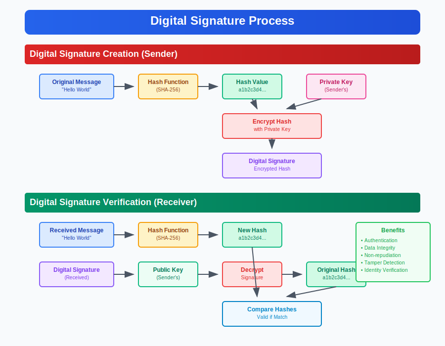

Digital Signatures
Cryptographic Authentication and Integrity
Ensuring Digital Document Authenticity and Non-repudiation

Digital Signature Definition
Digital Signature is a cryptographic mechanism that provides authentication, integrity, and non-repudiation for digital documents and messages using public key cryptography.
Key Properties:
- Authentication: Verifies the signer's identity
- Integrity: Ensures document hasn't been altered
- Non-repudiation: Signer cannot deny signing
- Tamper Evidence: Any modification invalidates signature
- Legal Validity: Legally binding in many jurisdictions
Analogy: Digital equivalent of handwritten signatures with mathematical proof of authenticity
Digital vs Physical Signatures
Physical Signatures:
- Verification: Visual comparison
- Security: Can be forged
- Binding: Document attachment
- Evidence: Handwriting analysis
- Integrity: No tamper detection
- Repudiation: Can be denied
- Distribution: Physical copies
Digital Signatures:
- Verification: Mathematical computation
- Security: Cryptographically strong
- Binding: Cryptographically bound
- Evidence: Digital certificate trail
- Integrity: Automatic tamper detection
- Repudiation: Non-repudiable with PKI
- Distribution: Instant electronic sharing
Advantage: Digital signatures provide superior security and verification compared to physical signatures
Digital Signature Process
Signing Process:
Step 1: Hash Generation
Document → Hash Function → Message Digest (Hash)
Example: SHA-256(document) = "a1b2c3d4..."
Step 2: Signature Creation
Hash + Signer's Private Key → Digital Signature
Encrypt(Hash, Private Key) = Digital Signature
Step 3: Attachment
Original Document + Digital Signature + Public Key Certificate
Verification Process:
Step 1: Hash Calculation
Received Document → Same Hash Function → New Hash
Step 2: Signature Decryption
Digital Signature + Signer's Public Key → Original Hash
Decrypt(Digital Signature, Public Key) = Original Hash
Step 3: Comparison
If New Hash = Original Hash → Signature Valid
If New Hash ≠ Original Hash → Document Modified
Digital Signature Algorithms
RSA Signatures:
- Algorithm: RSA-PSS, PKCS#1
- Key Sizes: 2048, 3072, 4096 bits
- Hash: SHA-256, SHA-384, SHA-512
- Usage: Most widely supported
- Performance: Slower than ECDSA
ECDSA Signatures:
- Algorithm: Elliptic Curve DSA
- Curves: P-256, P-384, P-521
- Hash: SHA-256, SHA-384, SHA-512
- Usage: Growing adoption
- Performance: Faster, smaller keys
EdDSA Signatures:
- Algorithm: Ed25519, Ed448
- Curves: Edwards curves
- Hash: Integrated (Ed25519=SHA-512)
- Usage: Modern alternative
- Performance: Very fast
Legacy Algorithms: DSA (Digital Signature Algorithm) - largely superseded by ECDSA
Role of Hash Functions
Why Hash First? Digital signatures operate on fixed-size message digests rather than variable-length documents for efficiency and security.
Hash Function Requirements:
- One-way: Computationally infeasible to reverse
- Deterministic: Same input produces same hash
- Avalanche Effect: Small change = completely different hash
- Collision Resistant: Hard to find two inputs with same hash
- Fixed Output: Consistent digest size
Common Hash Algorithms:
- SHA-256: 256-bit output, widely used
- SHA-384: 384-bit output, higher security
- SHA-512: 512-bit output, maximum security
- SHA-3: Latest standard, different design
- BLAKE2: High-performance alternative
Deprecated: MD5, SHA-1 are cryptographically broken and should not be used
Digital Signature Standards
| Standard |
Organization |
Algorithm |
Key Features |
| PKCS#1 |
RSA Labs |
RSA |
RSA signature schemes |
| FIPS 186-4 |
NIST |
DSA, ECDSA, RSA |
US government standard |
| RFC 3447 |
IETF |
RSA-PSS |
Probabilistic signature scheme |
| RFC 6979 |
IETF |
DSA, ECDSA |
Deterministic signatures |
| RFC 8032 |
IETF |
EdDSA |
Edwards curve signatures |
| ISO/IEC 14888 |
ISO |
Various |
International standard |
Compliance: Different industries and governments may require specific standards
Digital Signature Applications
Document Signing:
- PDF digital signatures
- Microsoft Office documents
- Legal contracts
- Government forms
- Medical records
- Academic certificates
Software Security:
- Code signing certificates
- Software updates
- Mobile app signing
- Driver authentication
- Firmware validation
- Package integrity
Communication:
- Email signing (S/MIME)
- Secure messaging
- API authentication
- Transaction authorization
- Blockchain transactions
- Digital timestamps
Implementation Technologies
PKCS Standards:
- PKCS#1: RSA cryptography standard
- PKCS#7: Cryptographic message syntax
- PKCS#11: Cryptographic token interface
- PKCS#12: Personal information exchange
File Formats:
- CAdES: CMS Advanced Electronic Signatures
- XAdES: XML Advanced Electronic Signatures
- PAdES: PDF Advanced Electronic Signatures
- ASiC: Associated Signature Containers
Programming Libraries:
- OpenSSL: Comprehensive cryptographic library
- .NET Cryptography: Microsoft cryptographic APIs
- Java Security: Java cryptographic architecture
- Web Crypto API: Browser-based cryptography
- Bouncy Castle: Cross-platform crypto library
Legal Validity of Digital Signatures
Legal Recognition:
- ESIGN Act (US): Electronic signatures legally valid
- eIDAS Regulation (EU): Electronic identification and signatures
- IT Act (India): Digital signatures with legal standing
- UNCITRAL Model Law: International electronic signature framework
Signature Types (eIDAS):
- Electronic Signature: Basic digital signature
- Advanced Electronic Signature: Uniquely linked to signer
- Qualified Electronic Signature: Highest legal status
Legal Requirements:
- Signer Authentication: Verified identity
- Document Integrity: Tamper evidence
- Non-repudiation: Cannot deny signing
- Audit Trail: Complete signing record
Security Threats and Attacks
Common Attack Vectors:
- Key Compromise: Private key theft or exposure
- Weak Random Numbers: Predictable signature generation
- Hash Collisions: Finding documents with same hash
- Man-in-the-Middle: Intercepting and modifying signatures
- Certificate Forgery: Fake certificate authorities
- Timing Attacks: Analyzing signature timing
- Side-Channel Attacks: Power analysis, electromagnetic
Historical Vulnerabilities:
- Sony PlayStation: Private key exposure (2010)
- Flame Malware: MD5 collision attack (2012)
- Debian OpenSSL: Weak random number generation
- RSA Key Factorization: Shared factors in keys
Defense Strategies:
- Strong Key Generation: Hardware random sources
- Key Protection: HSM or secure storage
- Certificate Validation: Proper CA verification
- Algorithm Updates: Migrate from weak algorithms
Digital Timestamping
Digital Timestamp: Cryptographic proof that a digital signature was created at a specific time, providing additional non-repudiation.
Timestamping Process:
1. Document Signing: Create digital signature
2. Timestamp Request: Send signature hash to TSA
3. Time Stamping Authority (TSA): Adds trusted timestamp
4. Timestamp Token: TSA signs timestamp with its key
5. Attachment: Timestamp token attached to signature
Benefits:
• Proves when signature was created
• Prevents backdating of signatures
• Required for long-term signature validity
• Legal evidence of signing time
Standards: RFC 3161 (Time-Stamp Protocol), ETSI TS 102 023
Long-term Signature Validation
Challenge: Digital signatures may become invalid over time due to certificate expiration or cryptographic algorithm weakening.
Archival Challenges:
- Certificate Expiration: Signing certificates expire
- CA Key Rollover: Certificate authority key changes
- Algorithm Deprecation: Weak algorithms over time
- Key Compromise: Historical key exposure
- Technology Evolution: Format obsolescence
Long-term Solutions:
- Archive Timestamps: Timestamp before expiration
- Signature Renewal: Re-sign with new certificates
- Validation Data: Preserve OCSP/CRL responses
- Evidence Records: Complete audit trail
- Format Migration: Convert to newer formats
Standards: ETSI TS 101 733 (CAdES), ETSI TS 103 171 (XAdES), ETSI TS 102 778 (PAdES)
Implementation Best Practices
- Choose Strong Algorithms: RSA-2048+ or ECDSA P-256+
- Use Current Hash Functions: SHA-256 minimum, avoid MD5/SHA-1
- Implement Proper Key Management: Secure key generation and storage
- Validate Certificates: Check certificate chains and revocation
- Include Timestamping: Use trusted timestamp authorities
- Plan for Long-term: Consider archive signature formats
- Follow Standards: Use established signature formats
- Regular Updates: Migrate to stronger algorithms over time
Testing: Validate signatures with multiple implementations and scenarios
Common Implementation Mistakes
Avoid These Pitfalls:
- Weak Key Generation: Insufficient randomness or short keys
- Insecure Key Storage: Unprotected private keys
- Missing Certificate Validation: Not checking certificate validity
- Ignoring Revocation: Not checking CRL/OCSP status
- Poor Error Handling: Failing silently on signature errors
- Inadequate Timestamping: Missing or untrusted timestamps
- Format Incompatibility: Non-standard signature formats
- No Upgrade Path: No plan for algorithm migration
Future Trends
- Post-Quantum Cryptography: Quantum-resistant signature algorithms
- Blockchain Integration: Distributed signature verification
- Cloud Signing: HSM-as-a-Service for signatures
- Mobile Signatures: Smartphone-based digital signing
- Biometric Integration: Combining biometrics with digital signatures
- Zero-Knowledge Proofs: Privacy-preserving signatures
- Automated Validation: AI-powered signature verification
- IoT Signatures: Lightweight signatures for IoT devices
Key Takeaways
- Digital signatures provide authentication, integrity, and non-repudiation
- They use public key cryptography and hash functions for security
- Multiple standards and algorithms are available for different needs
- Legal frameworks recognize digital signatures in many jurisdictions
- Proper implementation requires attention to key management and validation
- Timestamping is crucial for long-term signature validity
- Security threats require ongoing vigilance and algorithm updates
- Future developments will address quantum computing and enhanced usability
Remember: Digital signatures are only as secure as the private key protection and the underlying cryptographic implementation
Thank You
Questions & Discussion
Next: TLS (Transport Layer Security)